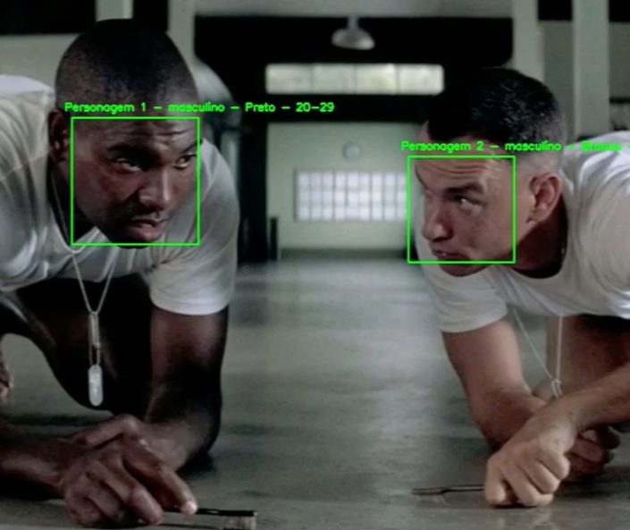

The research conducted here was in the academic environment of the
Federal University of Paraíba (UFPB). It is important
to point out that three of my internships involved working with research closely to industry research scientists and represent confidential work.
At Meta, I had the pleasure of working with the Behavioural Computing team in London. There, my project consisted of productionizing state-of-the-art speech models.
At Google, while working on YouTube, I was responsible for conducting experiments and coming up with new ideas to improve the model used in one of the portions of the video compression pipeline. Industry internships in Machine Learning while still undergraduate are challenging due to competition and complexity. I had this experience in both companies and got great feedback from both teams.
An Approach for Automatic Description of Characters for Blind People

Video Description is a vital accessibility concept in blind and visually impaired people's life.
Automating this task is not easy and involves many different problems.
This paper presents an approach to automatically describe characters.
Itamar Rocha Filho, Felipe Honorato, J. Wallace Lucena, J. Pedro Teixeira, Tiago Maritan
WebMedia 2021
[
Paper]
[
Demonstrations]
Iris-CV: Classifying Iris Flowers Is Not as Easy as You Thought
The paper shows the results and comparisons of different computer vision networks and algorithms on our newly created Iris flower image dataset.
The main goal is to propose a new toy/benchmark dataset that is in fact more challenging.
Itamar Rocha Filho, João Teixeira, João Wallace Lucena Lins, Telmo Silva Filho, Thaís Ramos, Cecília Silva,
Ana Clara Chaves Sousa, Felipe de Sousa, Manuel Ferreira Junior, Thaís Gaudencio do Rêgo, Yuri de Almeida Malheiros
BRACIS 2021